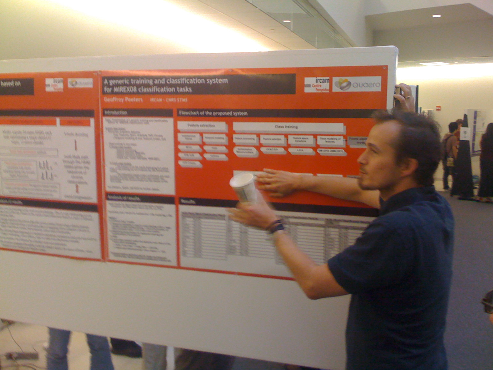

ISMIR Day 3 - Mostly MIREX Posters
MIREX Posters
The poster session on Day 3 was dominated by the MIREX submissions. I'm particularly interested in this year's new task on autotagging which had a number of good submissions.The autotagging submission by K. Trohidis, G. Tsoumakas, G. Kalliris, and I. Vlahava

Mike Mandel describes LabRosa's autotagger.

Kris West describes the MIREX 2008 audio classificatiom task.

Andreas Ehmann shows off the MIREX summary poster. Look at all those numbers.

Luke Barrington and Doug Turnbull present their autotagger.

George Tzanetakis and Malcolm Slaney have a chat.

Geoffrey Peeters presents his generic training and classification system for MIREX.

Doug describes the size of the brain needed to understand his work on the use of sparse time-relative auditory codes for music.